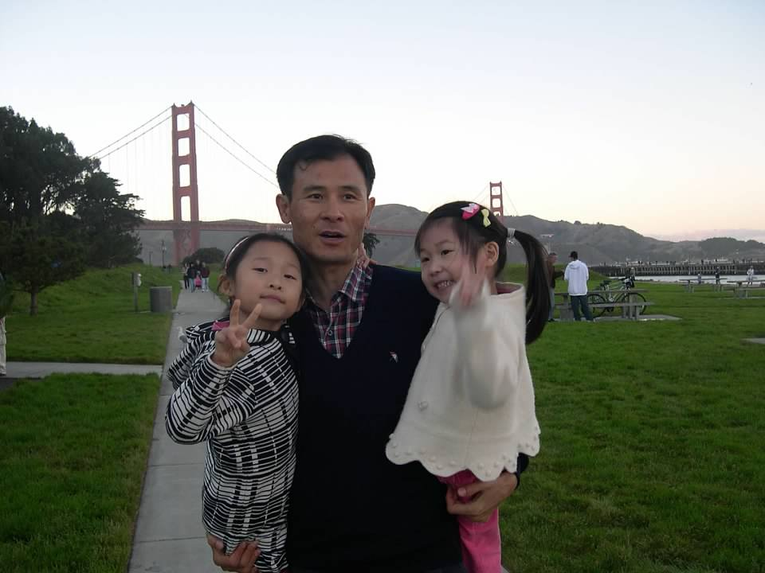
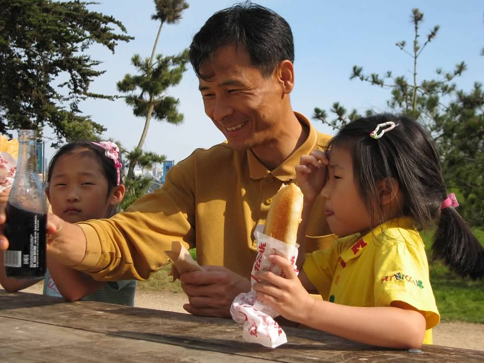

about / inforomance
lingua familia / love in a finite space
For families who struggle to communicate with each other, the record is their universal language.

November 2005 / San Francisco — Golden Gate Park? One month after moving to the United States. I’m the overexcited child in pigtails on the right.
1.
Every Friday, my dad sends old photos of us in the family group chat. This is a fairly recent development. For whatever reason, the photo printing service Shutterfly, which my dad used around a decade ago to create a series of photobooks, began to email him every Friday with reminders of what he had once uploaded to his account. He had never bothered to delete them, so they live in the cloud-archive. And now, whenever he gets them, he texts them to us.
Date unknown / Seattle — Pike Place Market. With my older cousin, visiting from Korea. Years later I would rediscover a magnet my parents had bought here; it’s now affixed to my fridge.
My family is dysfunctional (what is family if not?) for a lot of reasons, but I think the main reason is the fact that we moved from Korea to California when I was young and have fallen prey to the language barrier that developed ever since. I didn’t fully learn how to speak my native tongue, and as a result, I didn’t learn how to express myself to my parents. It evolved into a full-blown inability to truly talk to them, to have conversations, to allow them to know who I am and what I dream of.
My older sister is less of a victim of this language barrier, having learned more Korean before coming to the U.S., but she doesn’t always talk to our parents in the way normal children do, either. I can only guess the reasons why, because I’m obviously never going to ask her. The Korean-English barrier was so effective it produced an English-English barrier in this family too. Simply put, our relationships are a mess. No one knows how to talk to each other.
Today I am twenty-three years old and as far as my memory goes back I have said “I love you” to my mom once, around a year ago. Through text, that is. My dad has yet to receive this luxury.
I do love them. It took me over two decades to come to this conclusion. I just can’t say it.

Date unknown / San Francisco — Palace of Fine Arts, I think. I still wear that heart-shaped hair clip, though it looks much smaller now because my head is dramatically bigger. Also, is that Coke in a bottle?
So instead, I try to give my love more indirectly. When my dad sends these photos, I try as best as I can with my stunted Korean and stunted emotional capacity to express my appreciation. Of course, my limited language skill is never enough to show how precious the photos are to me. In them, I am a child, wearing clothes of a distinctly Korean fashion my mother picked out for me that have since been discarded. My sister and I are holding hands so naturally. What that feels like, I can’t remember. We’re both smiling, something I stopped doing a few years later once I learned self-consciousness. My mom’s hair isn’t grey and my dad’s hairline isn’t receded. (In fact, I think that was his primary motivation for sending these photos to us in the first place. To prove there existed a time before he was a balding man.)
These are records of who each of us were, what we looked like, and what we did, but they’re also proof that we have, actually, enjoyed a great amount of time together, as a family, in many cities and seasons. And maybe we can’t go back to that place, but at least we can remember we were once there.

Date unknown / Monterey — Monterey Bay Aquarium. You’ve noticed I don’t know the dates for any of these photos since the first one. I could literally just ask my dad, but doing even that is hard.
For a family that doesn’t know how to communicate, records of our lives together tend to be what keep us connected. Conversations between us are products of discernible effort, so the record, which is effortless—a byproduct—acts as an aid. It visibly acknowledges our relationships and is a way to hold onto each other, without explicitly admitting it, when we have grown apart. While it’s difficult to create new memories, there’s relief in the proof of our old ones.
I have virtually no recollection of the events captured in these photos. Yet to my parents, once those memories are jogged, it’s as if they happened yesterday (or so they say). The same image produces a different effect for each person. We all read it a little differently, remember it a little differently.
There’s something to say here about the generative and interpretive power of a record. The word record itself evokes a sense of neutrality, objectivity, in the same way the words evidence and data are supposed to. Thinking about my family’s split pespectives on our photos, though, I find that a record often takes on several subjective meanings and generates more still.
Which I appreciate, because sometimes these records are the result of painful experiences. It’s not that I want to erase that pain. I just want to see that I’ve arrived at love despite it.
Date unknown / Millbrae — a house on Helen Drive across Meadows Elementary School. My mom and dad in our living room. The stockings above the fireplace in the background suggest it was around Christmas, but there’s also a high chance we left them hanging there year-round the entire time we lived there. I watched my first Korean drama on that TV behind them, an activity that would become a core (and damaging, frankly) facet of my childhood.
Were my parents happy when this was taken? With their lives, and each other? I grew up wondering why my parents ever married. To this day it baffles me, though their separation has ceased to be a looming possibility. It does look like they’re forcing their smiles here, but then again sometimes a photo just comes out like that.
A record can prove that something happened, but it doesn’t always tell you the how or why. Especially when the record is a photo, which can be manipulated by the performance of the subjects. I’m left to interpret this how I like. And even though we probably weren’t, I would like to imagine we were happy, all of us.
2.
If I think about myself—as in my own body—I realize it’s also a record. I am a product of a certain activity my parents were participants of and in which there was a transaction of biological material. (Don’t make me say it.) So my physical self is a record of my parents’ partnership.
The body is quite the point of contention. Why is something so natural so uncomfortable? I have gone through all the dysmorphic rites of passage, the comparisons to others’ figures, the despair over outfits, the starving, the vomiting, the overthinking during sex, the almost comedic paranoia of being found dead in an unflattering state. Though my overall self-image has improved over time, it still fluctuates wildly on a daily basis.
There’s also the fact that, as a Korean, it’s genuinely impossible to avoid the conversation on cosmetic surgery. This topic and its ubiquity has become baked into our cultural identity. I’ve considered it, my sister has considered it, my friends and relatives have undergone it. Even my dad is jokingly (we hope) thinking about getting a transplant to pull his hairline back down, though confusingly he wants to have this procedure done in Turkey. Anyway, like the relationship with my family, my relationship with my physical self can bring me a lot of grief.
But then—once I start thinking about myself as a record—the idea becomes unthinkable, changing my face. The features of my parents are preserved in my own. It would be rude to remove that, wouldn’t it?
Also, I know my parents love all of me, so even if only out of respect for them, I would like to love all of myself, too.
3.
At the moment, most of the clothes in my wardrobe are actually the ones my mom doesn’t wear anymore. They’re garments from long ago, things she can’t fit into now or be bothered to put on. I raided her closet after a harrowing period of post-college unemployment and made the wonderful discovery that not only were they exactly the style of clothing I already liked, they also fit me almost perfectly.
April 6, 2024 / San Jose — a yacht for sale inside renowned conservative outdoor recreation store Bass Pro Shops. I think my mom’s white button-up shirt-slash-jacket (Stefanel) over a cream wool-rayon top (Aenoc) makes me look very Jackie O. I have seen maybe five photos of Jackie O.
Because it’s hard to talk to my mom, I have to cling onto other ways to connect to her. It’s so rare when we do connect that realizing I fit into her older clothes made me giddy with the feeling I’d unlocked some delicate superpower. For a long time, I wished I looked more like my sister, who has maintained the same weight since perhaps middle school on a diet that is arguably insane (half her caloric intake comes from hot cheetos). But my sister can’t wear my mom’s clothes, because they’re too big on her. I can. I’m delighted that I can. Actually, sometimes I find myself wishing I was a bit bigger so my mom’s pants wouldn’t shift ever so slightly down my hips all the time. Because I am wearing these for the rest of my life.
These clothes are, of course, records as well. They’re purchases from a life my mom lived decades before now, many of them from her life in Korea, before me, before we became part of the diaspora, before we separated from our homeland and from each other. They are records of items that aren’t sold anymore, because styles come and go, as do companies. Some are records of imports—non-Korean brands with tags written in Korean. And in a very personal and physical sense, the clothes are records of the shape of my mom’s body. I put them on every day, and they tell me about the length of my mom’s legs and the width of her waist, and it feels like I’m having a conversation with her.
April 10, 2024 / San Francisco — the Shakespeare Garden in Golden Gate Park. Coincidentally my mother’s date of birth, though we celebrate according to the lunar calendar instead. Corduroy jacket (Demoo) and black pants (Aenoc) were my mom’s; boots were my sister’s, which are ironically a size too small for her.
4. love in a finite space
I record a lot of stuff, personally. I keep everything. It drives my mom mad, which is ridiculous, because I definitely learned it from her. I also write extensively about my life, partly to record what happened in it. At times this proves to be a mistake; rereading my past writing floods me with horror and shame. Not just because of the content, but also because of the incredible lack of skill with which I wrote.
I’ve questioned this practice of recording. As in, why am I generating so much content about myself on an earth and on a digital realm where space is finite? Specifically, what is so important about me to justify this? And maybe that’s an absurd thought, because, well, do I not matter? But I honestly find this question really difficult to answer. Being alive is often a belittling experience.
My parents offer one response. I am a record of them. Their features are in my face, their bodies are in my body, and the muscles in my mouth make the sounds of their tongue. The fact that I continue to live each day is a physical testament to their love. In that sense, I matter more than anything. My existence is reason enough for taking up space in the physical and digital universe.
So I keep records, if only out of love.
fin.
record: re(다시) + cord(마음) → 마음에 불러서 되돌아오게 하다
record: re(again) + cord(heart) → to recall due to being summoned by the heart